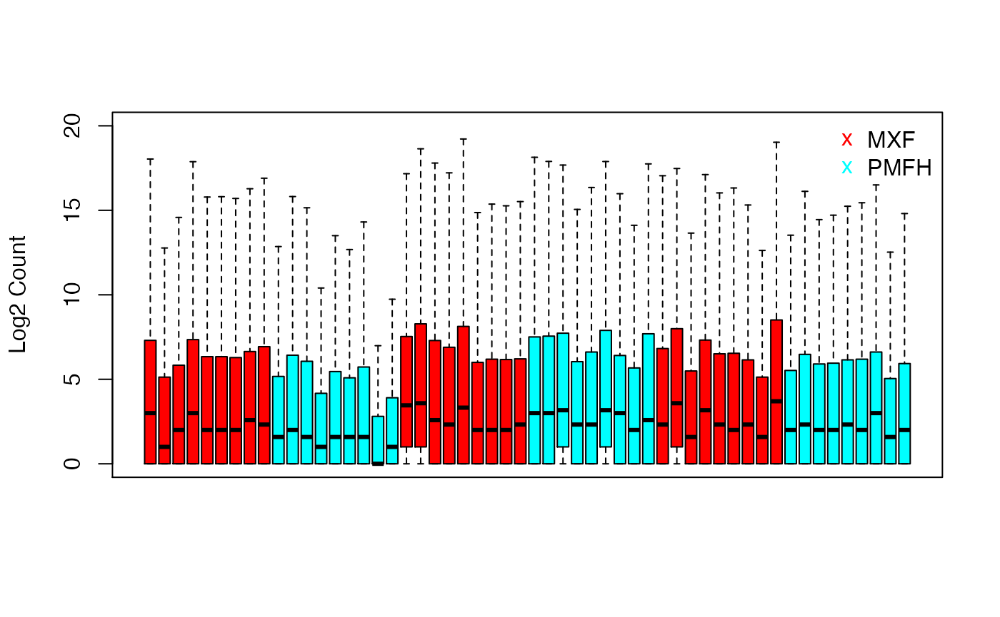
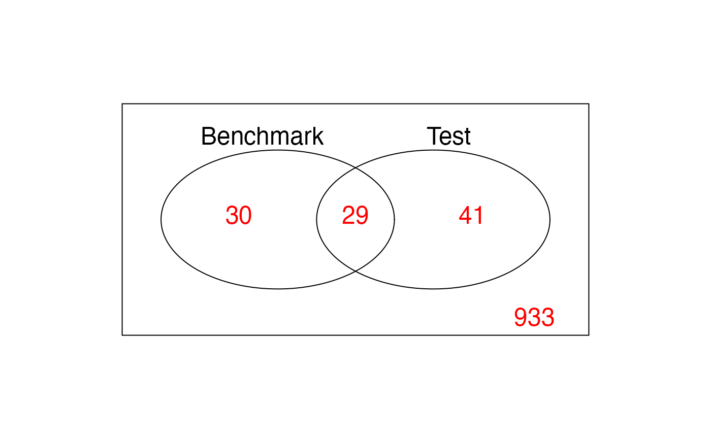

Introduction to DepthNorm Data
Intro_Data.RmdThe unique pair of miRNA sequencing data is collected from two of the most common and aggressive soft tissue sarcoma subtypes: myxofibrosarcoma (MXF) and pleomorphic malignant fibrous histiocytoma (PMFH). Collected at MSK between 2002 and 2012, 27 MXF samples and 27 PMFH samples including 1033 miRNA markers are extracted from newly diagnosed untreated tumors with sufficient quality and quantity. These samples are then measured twice separately. One of the obtained miRNA sequencing data (named as benchmark data in this package) is prepared by uniform handling and balanced sample-to-library-assignment minimizing artifact effects, which needs no normalization in the downstream analysis, while the other one (named as test data in this package) is collected in the usual way, which requires normalization for removing obscuring variability.
Benchmark Data Analysis
Overall Data Distribution
We show the boxplot of the log2(benchmark+1) for each sample.
benchmark.log = benchmark.log = log2(benchmark + 1)
boxplot(benchmark.log,
col = ifelse(grepl("MXF", colnames(benchmark.log)),
rainbow(2)[1], rainbow(2)[2]),
ylab = "Log2 Count", ylim = c(0, 20),
xaxt = "n", outline = FALSE)
legend("topright",c("MXF", "PMFH"), bty = "n",
pch = "x", cex = 1, col = c(rainbow(2)[1], rainbow(2)[2]))
Differential Expression Analysis
We continue to perform the DEA on benchmark data using voom-limma, and present the relationship between p-values and log fold change in volcano plot.
emp.group = c(rep(c(rep('MXF',9),rep('PMFH',9)),3))
benchmark.voom = DE.voom(RC = benchmark, groups = emp.group, P = 0.01)
DE.bench = benchmark.voom$id.list
benchmark.voom.dat = data.frame(dm = benchmark.voom$p.val[,2],
p.value = benchmark.voom$p.val[,1])
mask <- with(benchmark.voom.dat, p.value < .01)
cols <- ifelse(mask,"red", "black")
with(benchmark.voom.dat, plot(dm, -log10(p.value), cex = .5, pch = 16,
col = cols, xlim = c(-3.6, 3.6),
ylim = c(0, 6),
xlab = "Mean Difference: PMFH - MXF"))
abline(h = 2, lty = 2)Scatterplot of Group Mean Averages V.S. Group Mean Differences
In the below scatterplot in log scale, red dots indicates the DE markers with p < 0.01 as cut-off point.
cols = ifelse(rownames(benchmark.log) %in% DE.bench, "red", "black")
plot(rowMeans(benchmark.log),
apply(benchmark.log[,grepl("MXF", colnames(benchmark.log))], 1, mean) -
apply(benchmark.log[,grepl("PMFH", colnames(benchmark.log))], 1, mean),
pch = 16, cex = 0.5, col = cols,
xlab = "Group Mean Average of Log2 Count",
ylab = "Group Mean Difference of Log2 Count",
main = "")Test Data Analysis
Differential Expression Analysis
We continue to perform the DEA on test data using voom-limma without any normalization, and present the relationship between p-values and log fold change in volcano plot.
test.voom = DE.voom(RC = test, groups = emp.group, P = 0.01)
test.voom.dat = data.frame(dm = test.voom$p.val[,2],
p.value = test.voom$p.val[,1])
mask = with(test.voom.dat, p.value < .01)
cols = ifelse(mask,"red", "black")
with(test.voom.dat, plot(dm, -log10(p.value), cex = .5, pch = 16,
ylim = c(0, 6), xlim = c(-3.6, 3.6),
col = cols, xlab = "Mean Difference: PMFH - MXF"))
abline(h = 2, lty = 2)
Venn Diagram Between Benchmark and Test
pval.bench.test = data.frame(cbind(bench.pval = benchmark.voom$p.val[,1],
test.pval = test.voom$p.val[rownames(benchmark.voom$p.val),1]))
attach(pval.bench.test)
bench.sig <- (bench.pval < 0.01)
test.sig <- (test.pval < 0.01)
venn2 <- cbind(bench.sig, test.sig)
vennDiagram(vennCounts(venn2),
names = c("Benchmark", "Test"),
cex = 1.5, counts.col = rainbow(1))Group Means of MXF
Scatterplot for the relationship between group means of benchmark and test data for MXF.
benchmark.log.MXF.mean = rowMeans(benchmark.log[, grepl("MXF", colnames(benchmark.log))])
plot(benchmark.log.MXF.mean,
rowMeans(test.log[,grepl("MXF", colnames(test.log))]), pch = 16, cex = 0.5,
xlab = "Group Mean Average of Log2 Count in Benchmark",
ylab = "Group Mean Average of Log2 Count in Test",
main = "MXF", xlim = c(0, 20), ylim = c(0, 20))
abline(0,1)
Group Means of PMFH
Scatterplot for the relationship between group means of benchmark and test data for PMFH.
benchmark.log.PMFH.mean = rowMeans(benchmark.log[, grepl("PMFH", colnames(benchmark.log))])
plot(benchmark.log.PMFH.mean,
rowMeans(test.log[,grepl("PMFH", colnames(test.log))]), pch = 16, cex = 0.5,
xlab = "Group Mean Average of Log2 Count in Benchmark",
ylab = "Group Mean AVerage of Log2 Count in Test",
main = "PMFH", xlim = c(0, 20), ylim = c(0, 20))
abline(0,1)
Simulation
In this section, we will present how to use simu() function to generate desired simulated dataset. We will simulate all the possible datasets with proportion of DE between 0.0175 and 0.0225 and median of mean differences between -0.5 and 0.5.
simulated = simu(proportion_L = 0.0175, proportion_R = 0.0225, median_L = -0.5, median_R = 0.5)
head(simulated$simulated_benchmark[[1]])[,1:5]
#> D20 D17 D9 E17 E5
#> hsa-let-7a-2* 6 4 2 21 11
#> hsa-let-7a(3) 76141 61589 57395 90362 268842
#> hsa-let-7a*(2) 811 436 142 938 1517
#> hsa-let-7b 48305 29023 14939 30967 77765
#> hsa-let-7b* 392 125 74 170 607
#> hsa-let-7c 10827 9774 12911 16358 65477
head(simulated$simulated_test[[1]])[,1:5]
#> D20 D17 D9 E17 E5
#> hsa-let-7a-2* 2 1 0 6 2
#> hsa-let-7a(3) 72284 53958 127231 30311 253696
#> hsa-let-7a*(2) 363 113 240 163 1162
#> hsa-let-7b 27736 15832 25940 7626 93419
#> hsa-let-7b* 112 32 59 50 258
#> hsa-let-7c 6951 8156 28152 4349 71733